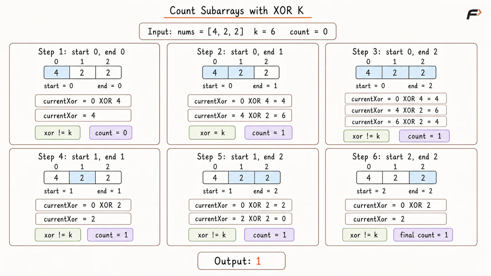
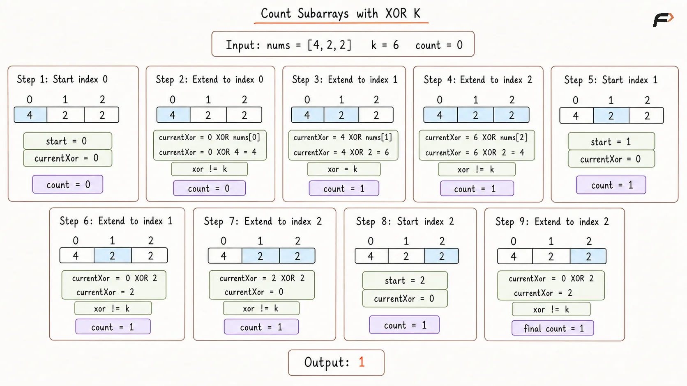
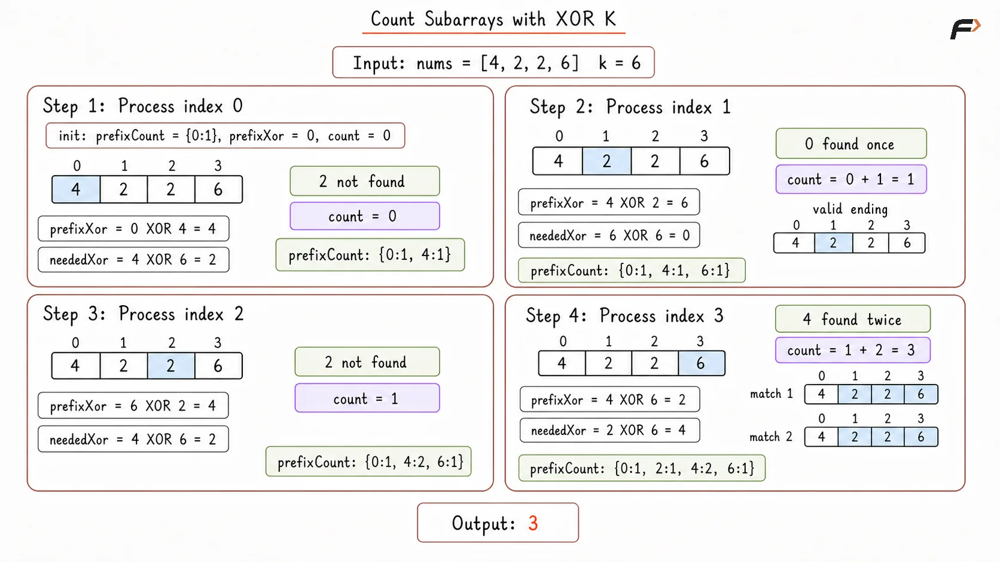

Count Subarrays with a Given XOR K
Given an integer array nums and an integer k, return the total number of non-empty contiguous subarrays whose XOR equals k.
Return 0 when no such subarray exists or when nums is empty.
Example 1
Input: nums = [4, 2, 2, 6, 4], k = 6
Output: 4
Explanation: The subarrays with XOR 6 are [4, 2], [4, 2, 2, 6, 4], [2, 2, 6], and [6].
Example 2
Input: nums = [5, 6, 7, 8, 9], k = 5
Output: 2
Explanation: The subarrays with XOR 5 are [5] and [5, 6, 7, 8, 9].
Brute Force Approach
The most direct method generates every possible contiguous subarray and calculates its XOR separately.
Every pair of starting and ending indices defines one subarray. Checking every selected range guarantees the correct count, but overlapping subarrays repeatedly process many of the same elements.
Algorithm
Store the array size in
n. Ifn == 0, return0because no non-empty subarray can be formed.Initialize
countwith0, where it stores the number of subarrays found whose XOR equalsk.Treat every index
startas the beginning of a possible subarray and every indexendfromstartton - 1as its ending position.For each selected range
[start, end], initializecurrentXorwith0and apply XOR to all elements fromstartthroughendto calculate that subarray's complete XOR.If
currentXor == k, incrementcountbecause the selected range forms one valid subarray.Return
countafter every possible contiguous subarray has been examined.
Dry Run

Count subarrays with given xor K Brute Force Dry Run.png
Solution
#include <bits/stdc++.h>
using namespace std;
class Solution {
public:
long long countSubarraysWithXor(vector<int>& nums, int k) {
int n = nums.size();
if (n == 0) {
return 0;
}
long long count = 0;
/*
* Generate every possible subarray
* using its start and end indices.
*/
for (int start = 0; start < n; start++) {
for (int end = start; end < n; end++) {
int currentXor = 0;
// Calculate the XOR of the selected range.
for (int index = start; index <= end; index++) {
currentXor ^= nums[index];
}
// This range is valid when its XOR equals k.
if (currentXor == k) {
count++;
}
}
}
return count;
}
};
int main() {
vector<int> nums = {4, 2, 2, 6, 4};
int k = 6;
Solution solution;
cout << solution.countSubarraysWithXor(nums, k);
return 0;
}Complexity Analysis
Time Complexity: O(N³), where N represents the array size. Two loops select every starting and ending index, while a third traversal calculates the XOR of each selected range.
Space Complexity: O(1), because only loop indices, currentXor, and count require auxiliary storage.
Better Approach
The Brute Force Approach recalculates the XOR of every selected range from the beginning.
For a fixed starting index, the next subarray contains the previous range plus one new ending element. Maintaining a running XOR allows the next range to be evaluated using only one XOR operation.
Algorithm
Store the array size in
n. If the array is empty, return0.Initialize
countwith0to keep track of how many subarrays have an XOR equal tok.Treat every index
startas the beginning of a new group of subarrays and initializecurrentXorwith0for that starting position.Move
endfromstartton - 1and updatecurrentXorusingcurrentXor XOR nums[end]. This extends the previous range by one element instead of recalculating its complete XOR.Increment
countwhenevercurrentXor == k, since the current range[start, end]has the required XOR.Return
countafter all starting and ending positions have been processed.Dry Run

Count subarrays with given xor K Better Appraoch Dry Run.png
Solution
#include <bits/stdc++.h>
using namespace std;
class Solution {
public:
long long countSubarraysWithXor(vector<int>& nums, int k) {
int n = nums.size();
if (n == 0) {
return 0;
}
long long count = 0;
for (int start = 0; start < n; start++) {
int currentXor = 0;
/*
* Extend the current range one element
* at a time and reuse its previous XOR.
*/
for (int end = start; end < n; end++) {
currentXor ^= nums[end];
// Count every subarray whose XOR equals k.
if (currentXor == k) {
count++;
}
}
}
return count;
}
};
int main() {
vector<int> nums = {4, 2, 2, 6, 4};
int k = 6;
Solution solution;
cout << solution.countSubarraysWithXor(nums, k);
return 0;
}Complexity Analysis
Time Complexity: O(N²), where N represents the array size. Every starting index extends through all possible ending indices, while each extension requires one XOR operation.
Space Complexity: O(1), because only loop indices, currentXor, and count require auxiliary storage.
Optimal Approach
A prefix XOR stores the XOR of all elements from index 0 through the current index.
Suppose the current prefix XOR is prefixXor, and an earlier prefix XOR is previousXor. The XOR of the elements between those two prefix positions is:
prefixXor XOR previousXorFor this value to equal k:
prefixXor XOR previousXor = kApplying XOR with k on both sides gives:
previousXor = prefixXor XOR kTherefore, for every current prefix XOR, the algorithm searches for earlier occurrences of prefixXor XOR k.
The frequency of each prefix XOR must be stored because the same value may appear at multiple earlier positions, and every occurrence forms a different valid subarray.
Algorithm
Create a hash map
prefixCountand store{0: 1}. This initial entry represents the empty prefix before index0, allowing subarrays beginning at index0to be counted.Initialize
prefixXorwith0to store the running XOR andcountwith0to store the total number of valid subarrays.Traverse the array from left to right and update
prefixXorusingprefixXor XOR nums[index].Calculate
neededXor = prefixXor XOR k. Every earlier occurrence ofneededXorforms a subarray ending at the current index whose XOR is exactlyk.Add the frequency of
neededXortocount, since each occurrence represents a different valid starting position. Then increase the frequency ofprefixXorso it becomes available for future indices.Return
countafter the complete array has been processed. If the array is empty, the traversal does not execute and the result naturally remains0.
Dry Run

Count subarrays with given xor K Optimal Appraoch Dry Run.png
Solution
#include <bits/stdc++.h>
using namespace std;
class Solution {
public:
long long countSubarraysWithXor(vector<int>& nums, int k) {
unordered_map<int, long long> prefixCount;
/*
* The empty prefix allows subarrays
* starting from index 0 to be counted.
*/
prefixCount[0] = 1;
int prefixXor = 0;
long long count = 0;
for (int value : nums) {
prefixXor ^= value;
int neededXor = prefixXor ^ k;
/*
* Every earlier occurrence of neededXor
* creates a valid subarray ending here.
*/
if (prefixCount.find(neededXor) != prefixCount.end()) {
count += prefixCount[neededXor];
}
/*
* Store the current prefix only after
* checking the earlier prefix XORs.
*/
prefixCount[prefixXor]++;
}
return count;
}
};
int main() {
vector<int> nums = {4, 2, 2, 6, 4};
int k = 6;
Solution solution;
cout << solution.countSubarraysWithXor(nums, k);
return 0;
}Complexity Analysis
Time Complexity: O(N) on average, where N represents the array size. Every element requires one hash-map lookup and one frequency update.
Space Complexity: O(N), because the hash map may store up to N + 1 distinct prefix XOR values.
FAQs
Q1. Why does prefixXor XOR neededXor produce the XOR of a subarray?
Values appearing in both prefix XORs cancel because x XOR x = 0. Only the elements between the two prefix positions remain.
Q2. Why is neededXor calculated as prefixXor XOR k?
The required earlier prefix must satisfy prefixXor XOR earlierPrefix = k. Rearranging the XOR relation gives earlierPrefix = prefixXor XOR k.
Q3. Why is prefixCount initialized with {0: 1}?
The initial zero represents the empty prefix before index 0. It allows a subarray starting at index 0 to be counted when its XOR directly equals k.
Q4. Why are prefix XOR frequencies stored instead of only their presence?
The same prefix XOR may occur at multiple earlier positions. Every occurrence creates a different valid subarray ending at the current index.
Q5. Why is the current prefix XOR stored after checking neededXor?
Only earlier prefixes should form subarrays ending at the current position. Updating afterward preserves that order.
Q6. Can a sliding-window approach solve this problem?
No general sliding-window rule exists because XOR does not increase or decrease predictably when elements enter or leave the window.